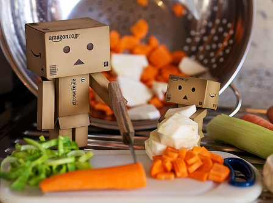
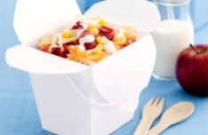

Creamy Pasta Salad
You will need:
- - 250g dried farfalle pasta
- - 1/4 cup of whole-egg mayonnaise
- - 1 tablespoon of lemon juice
- - 310g can of corn kernels, drained
- - 1/2 red capsicum, chopped
- - 1 carrot, grated
- - 125g of cherry tomatoes, halved
Here's how you make 'em:
- 1. Cook pasta in a saucepan of boiling, salted water, until tender (approx. 12 minutes). Drain. Rinse under cold water.
- 2. Combine pasta, mayonnaise and lemon juice in a bowl. Add corn, capsicum, carrot, and tomatoes. Toss gently to combine.

Back to recipes.